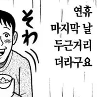

26 · 9 · 1 시간 전 · 원문
수집 당시 댓글 9개
악덕팬더 · 12 시간 전
굴대남 · 12 시간 전
시장에 피가 낭자하고 공포가 만연하다펀더멘털은 무너지지 않았고 미국자금까지 들어온다AI투자에 대한 의심은 커졌음에도 메모리는 앞으로 더 부족해진다그래 바로 지금이 타이밍이다...!
CU편의점 · 12 시간 전
즐겁다!
Rhesus · 12 시간 전
팀장님 저 월요일 연차 쓰겠습니다당일 통보긴 한데 어쩌라고요 좋은하루 되십쇼
연골어류 · 12 시간 전
ediredo · 11 시간 전

↳ 답글 · nesy · 10 시간 전
도키도키
초강력먼지제거제 · 10 시간 전
아싸 백수
복숭아먹기 · 1 시간 전


시장에 피가 낭자하고 공포가 만연하다
펀더멘털은 무너지지 않았고 미국자금까지 들어온다
AI투자에 대한 의심은 커졌음에도 메모리는 앞으로 더 부족해진다
그래 바로 지금이 타이밍이다...!